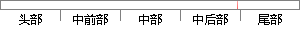

代码起主导作用，并且决定何时调用类库的方法。
片段位置图

相似结果|
相似片段 1：Activated自动被激活Explicitlyactivated显某些模块方法必须被其它代码显示地调用才能被激活。示被激活一种可以挂起线程执行的方法。传递给waitO的参数决定了何时线wait0程
|
※ 片段修改建议 ※
近似词参考：- 并且：而且
- 决定：决议 决意 抉择
- 何时：什么时候
- 调用：挪用
- 方法：方式 要领 法子
系统自动生成语句：代码起主导作用，而且决议什么时候挪用类库的方式。
注：本片段修改建议为系统自动生成，仅供参考。